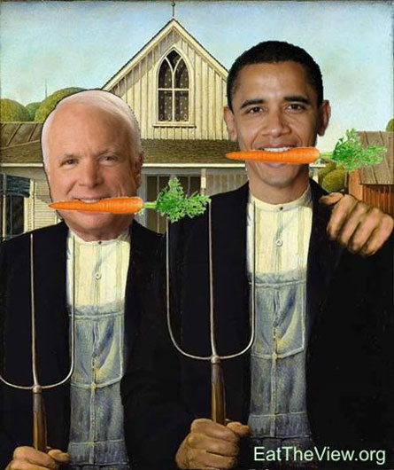

A growing group of gardeners and local foods activists are calling on the next president to send a strong message on independence of the edible variety. Operating under the rallying cry “Eat the View,” these homegrown food advocates are urging the next “Eater-in-Chief” to convert part of the White House lawn into a food garden. We recently caught up with Roger Doiron, the campaign’s initiator, to learn more.
Tell us about your project to get the White House to plant a food garden on the front lawn.
It’s an old idea that I felt we needed to dust off and make new again. The White House has had food gardens at many different points and was even home to a herd of sheep in 1917 when President Wilson brought them in to replace the power mowers. In February, I decided to put the idea back on the public agenda by posting it on the Web site OnDayOne.org where people are making different proposals for what the next president should do upon taking office. With a boost here and there from different people, groups and media outlets (the idea has been written about in both the Washington Post and the New York Times), “Eat the View” has climbed into the No. 1 slot on the site.
So why is this initiative something the White House should focus on, considering they could just as easily use the lawn to showcase all kinds of other worthwhile projects?
I really believe in the symbolic power of the White House as “America’s House.” Productive home gardens made sense before, and they make sense again given the global challenges we’re against. Sure, there are other projects that could be showcased and perhaps should be showcased, but this is a good way to start because it’s an idea that a lot of people can embrace. Gardens aren’t red state or blue state, but cross over political, social and economic boundaries. They even help bridge countries and cultures. There are gardeners from the United Kingdom and Australia supporting the campaign with the hope that it will give them an opportunity to make the same case to their elected officials.
How long have you been growing your own food?
I’ve been involved in the growing of food in one way or another for almost 30 years. My first contact with the soil was in my parents’ vegetable garden. In my early teens, I earned pocket money in the summer picking peas and beans at our neighborhood farm, a farm that has since been plowed under and planted with a 100-house subdivision. During the 1990s, I worked in Brussels, Belgium. During those years, I grew tomatoes on a rooftop and helped with my in-laws’ garden in the countryside on the weekends. Now, I’m living just outside of Portland, Maine, where my wife and three boys eat from our 1,200-square-foot suburban garden.
Is this really a feasible option for most Americans? I mean, don’t you spend MOST of your time growing your own food?
It’s very feasible. At the height of the Victory Garden movement, gardeners were supplying 40 percent of the nation’s fruits and vegetables. Consumption rates of fresh, healthy produce were never higher. Sure it takes time, but it doesn’t have to be a burden. There’s a lot of satisfaction that comes with being able to feed your family delicious, nutritious foods harvested at the peak of ripeness. Part of the art of gardening is knowing how to reduce the time spent on weeding, watering and pest management, so that you have more time for planting, harvesting and enjoying the fruits of your labors.
Do you have a step-by-step plan of action for how the White House food garden project should/could be implemented?
To be honest, I don’t have a well-developed plan because I don’t think it should be up to one person or one group to decide this. It is a landscape of historic importance and one that belongs to “we the people.” The plan of action for now is to rally a barely restrained mob of diverse people calling for an edible landscape of some shape or size on the “First Lawn.” Personally, I would like to see something that is ambitious, both horticulturally and socially. I’m imagining a large, organic garden capable of meeting all the seasonal produce needs of the White House kitchen with overflow going to local food pantries.
What would the necessary budget be?
It would be minimal to get started and would save money down the road. To give you a frame of reference, I spent less than $100 last year on seeds and supplies, and converted that investment into more than six months worth of fruits and vegetables for my family of five. The list of people who would be prepared to donate seeds and their time to the project would be a long one indeed.
Who would do the actual work?
It depends again on the size and nature of the project. Right now, the White House has a staff of 13 people maintaining the 18 acres of grounds and uses additional labor for seasonal jobs like tree trimming. Everything that happens within those 18 acres currently falls under the jurisdiction of the National Parks Service. It seems like they would need to have a coordinating role, but it would be important to have citizen involvement at every step of the process.
How can Mother Earth News readers assist this effort?
Thanks for asking! They can do different things. They can vote for the idea on OnDayOne.org by following this link and clicking on “rate this idea.” They can also join the campaign by visiting EatTheView.org, where they can sign an online petition and connect with others who are working to spread the word and to identify other views that should be “eaten.” For people with Web sites, blogs or social networking pages, we have campaign widgets and artwork that they can add to their Web pages. Readers who use FaceBook can join our group. But the biggest help your readers can offer is to eat their own view by eating homegrown and locally grown foods. The more people who do it, the more impact we have and the easier it becomes to make our case to our elected officials to make the political changes needed to help the local foods revolution grow and spread.
|
 ROGER DOIRON To join the campaign to help the new president grow an organic food garden on the White House lawn, visit EatTheView.org. |
|
|